白猫の道(仮)
コロプラから配信されているゲームアプリ、白猫プロジェクトについて紹介しています。性能や武器スキル、ステージの攻略方法などのアクション要素は既に他で紹介されているものが多いため、当サイトではストーリーやキャラクター、冒険の舞台となる島を中心にこれから白猫プロジェクトを始めようという方に向けた、また既にプレイされている方がもっと楽しめるようにゲームの魅力を紹介します。
白猫5つの魅力
その1 豊富なストーリー
総ストーリー
〇〇時間以上
白猫最大の魅力はそのストーリー！
メインストーリー、イベントストーリー、季節ストーリー、アニメコラボストーリーなどなど8年にわたる冒険には数多の歴史が刻まれる。
そして昨年、メインストーリーが遂に完結！
タイトルを『白猫プロジェクトNEW WORLD』と改め、完全続編となる新たな冒険が始まった。
メインストーリー
ずっとずっと昔の話、世界には天空に浮かぶ白の王国とどこまでも大地が続く黒の王国という2つの国しかなかった。その世界が闇の王によって滅ぼされる。それから数万年後、世界には無数の島が点在し、記憶を無くした1人の冒険家は小さな島の海岸にいた。出会ったのは同じく記憶のない少女と一匹の猫。大冒険はここから始まる。
イベントストーリー
ストーリーの面白さはイベントストーリーから来てると言っても過言ではない。これまで数々のイベントが開催されてきた。カルト教団のような組織が作った学院に通う生徒達の話、巨大な国の暗殺部隊の話、ニートが勇者になるという某RPGゲーム風の話、などなどイベントシリーズの総数は〇〇以上。続編を待ち望まれるシリーズも多い。特に毎年開催されるアプリのリリース年日、7月14日に開催される周年イベントの豪華さは圧巻！そして各イベントはキャラクターによって深く繋がり合うため、「独立した単なるイベント」に非ず。イベントストーリーにも8年分の歴史が詰まっている。
季節ストーリー
イベントストーリーに含まれるが各話完結要素がやや強目なのが季節イベント。物語が日常的なものになりやすいため、よりキャラクターの魅力に焦点を当てやすい。ファンの人気投票によって登場するキャラクターを決める催しもここで行われることが多い。夏の水着イベント、秋のハロウィン、冬のクリスマス、お正月など季節イベントは盛り沢山。白猫で春夏秋冬を感じられる。イベントの雰囲気はBGMも相まって素晴らしい。
コラボストーリー
これまで数々の人気アニメとコラボをしている白猫プロジェクト。リゼロ、ヒロアカ、このすば、SAOなどなど人気アニメとのコラボが平均して2〜3ヶ月の一回のペースで行われる。コラボイベントのストーリーは白猫のオリジナルのストーリーに関わることは少ないが、イベントは基本再開催されず、コラボキャラもガチャで逃すともう手に入らないことが多い。ある種期間限定のレアイベントだ。
その2 キャラクターの個性
総キャラ〇〇以上！
全員が個性的！
まずはメインの３人を紹介します
主人公 cv梶裕貴
本作の主人公。記憶を失っている赤髪の冒険家。かつて存在した黒の王国で闇の王子と呼ばれていた少年に瓜2つ。口数は少ないが、信念が強く周りから頼られる存在。体から暖かい光を放つことができて、キャラクターを覚醒させることができる。名前はプレイヤーが自由に付けることができるため、みんなからは「彼」のように固有名詞で呼ばれることがない。物語の進行に合わせて容姿が変化する。
キャトラ cv堀江由衣
本作のマスコットキャラクター。森で出会った人語を喋る猫。カニカマが大好き。とにかくおしゃべりで顔が広い。全てのキャラクターはキャトラのコミュニケーション力で主人公達と知り合いになっていると言ってもよい。自由気ままな性格だが、意外と一番の常識人であるため、自由すぎるキャラに対してはツッコミ役になること多々。正体は未だ謎であり、かつて存在した白の王国で同じ容姿の猫がいたがその猫は喋っていなかった。
アイリス cv堀江由衣
本作のヒロイン。記憶を失っている魔法を操る少女。かつて存在した白の王国を収めていた少女に瓜2つ。敵勢力からは「白の巫女」と呼ばれているようだが......。お料理やお裁縫が得意。常に守ってやる必要があるような儚い一面も持つ一方、率先してみんなの前に立って戦うなど凛とした一面も併せ持つ。自由なキャトラに対してよく心の中で冷静なツッコミを行っている。
白猫のキャラクターはとにかく個性豊かで魅力的✨
正直ストーリーのみ追い求めるのなら無料で100%楽しめるが、これがあるから課金してしまう。
推しキャラは絶対にガチャでお迎えしたい！
そして、何より声優さんが豪華すぎる！
人気アニメのあのキャラクターの声を担当する声優さんがこんなにも！
下記に挙げるキャラクターはほんの一部。そして１キャラだけでこの情報量！その情報ひとつひとつにフィーチャーしたストーリーも生まれたりする。
自分の推しのキャラが出るストーリーの楽しさは倍増。
シエラ cv雨宮天
竜と共に戦うドラグナーの少女、相棒は１角竜フレイヤ。農家の娘であり田舎っ子、特にさくらんぼ栽培に力を入れている。ブランド名はスキルニシキ、フレイヤの大好物。２人は強い絆で結ばれているため言葉を交わすことができる。母娘のような関係性。しかし、フレイヤはある出来事からあまり人間に気を許していない。
他に茶熊学園５期生として入学しテニス部に入ったり、真夏の海の底に桜を探しに行く冒険に出かけたりする。古代の精霊キングスクラウンに選ばれて試練にも挑んだ。

ティナ cv釘宮理恵
最強の父と母の血を引く最強の少女でプレシャスチルドレンと呼ばれる。その細腕はあらゆる者をブッ飛ばす。初め、子拐いによって娯楽の島ジョカに囚われていた。両親について詳しいことはわかってないが長期旅行中とのこと。現在はヴィンセントとブラットという２人のギャングが保護者的立場である。
他にクリスマス演劇で主演を務めるたり、茶熊学園に3期生として入学して生徒会長を務めたりする。周年イベントのシリーズでは2回も登場し、重要な役回りを担う。
アイシャ cv井上麻里奈
世界最大の国「帝国」、その元老院直下の諜報機関「狩猟戦旗」のNo10。13人いる彼らは一枚岩ではなくそれぞれの目的の為に動いている。食べ物をあまり食べない体質。いつも持ち歩いているジェエリービーンズを使って占いを行うのが得意。また地質学に博識でフィールドワークを好む。
他に茶熊学園4期生で副生徒会長を務めたり、温泉に訪れてそこで開催される夜祭を守ったり、お正月にスゴロクの中の世界を戦車に乗って冒険したりする。
その３ 冒険の舞台
島の数は〇〇以上
BGMが雰囲気を作る
魅力的なストーリーとキャラクターを支えるのは魅力的な世界観。
白猫の世界は青い海と無数の島々からなるが、その気候や町のつくりは島によって様々。なぜ違いが生まれるかはその土地の風土を決めてしまうグレイスルーンというコアが島によって異なっているから。その多様性はさながらゲームの中に一つの世界地図があるかのよう。主人公達は冒険の中で新たな島に降り立ったり、別のイベントで一度冒険したことがある島に再度訪れたりする。
そして、島の雰囲気を飾り付けるのは魅力的なBGM。白猫の音楽はとにかく豪華でイベントごとにそのイベント内容と島の雰囲気に合う異なったBGMが用意されている。周年に至っては主題歌まである。
スキエンティア
学術都市スキエンティア、多くの学生が通う魔法学院をはじめとして、魔術院、図書館も数多い。近未来的な風景の街並みは、島の地下に眠る遺跡の研究の過程で発展してきた。ストーリーの大きな転換点となった場所。
ジョカ
カジノと高級ホテルが象徴的なネオン煌めく娯楽の島。夜が最も賑やかであり、歌姫によるステージが開催される。しかし、ゴージャスな街の裏路地にはギャングも多く闇取引の温床になりやすい。
クジョウの島
陰陽道の雰囲気漂う島。モダンな建物が立ち並び、西洋の文化を取り入れ始めた頃の日本のような景観をしている。街中には神社やお稲荷さんが多くあり、祟り神であるテンジン様を崇め奉る2つの家が強い勢力を持っている。
その4 様々なアクション
タップとフリック
指一本で操作可能
アクションゲーム要素も備えているのが白猫プロジェクト。ストーリーを先へ進めるためにはクエストをクリアしなければならず、アクションを駆使して敵を倒したり、トラップを回避したりしながら攻略する。
スマホ用ゲームのため操作は指一本で完結して、タップで攻撃、フリックで回避と簡単である。
操作するキャラクターごとにスキルという必殺技は大きく異なるが基本攻撃となるアクションの型は大きく職業に依存する。
- 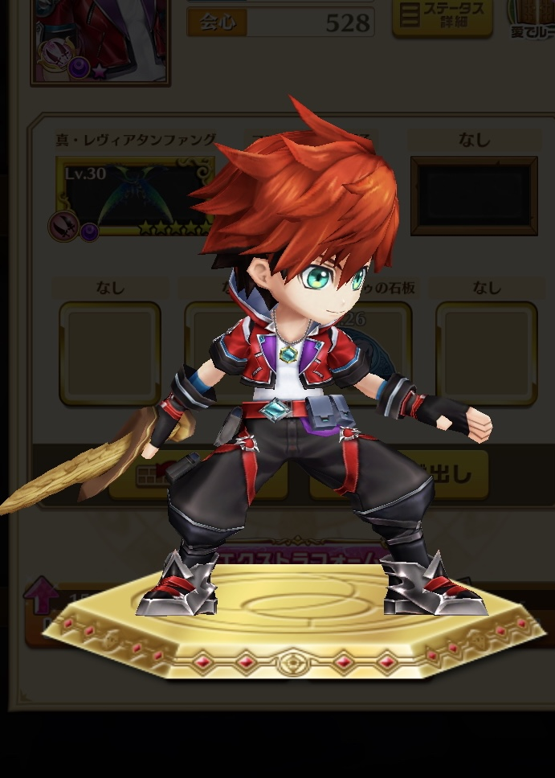
- 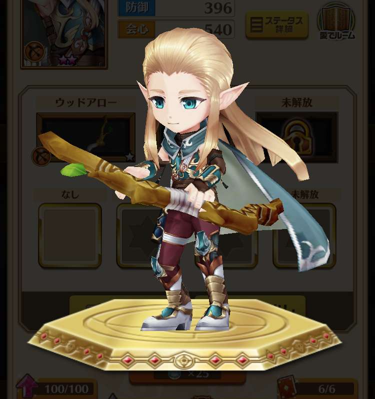
- 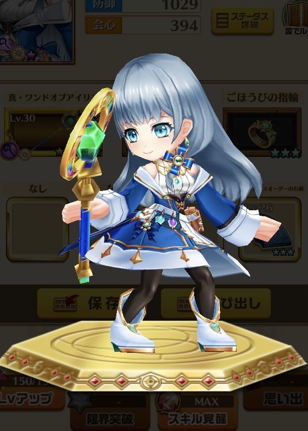
- 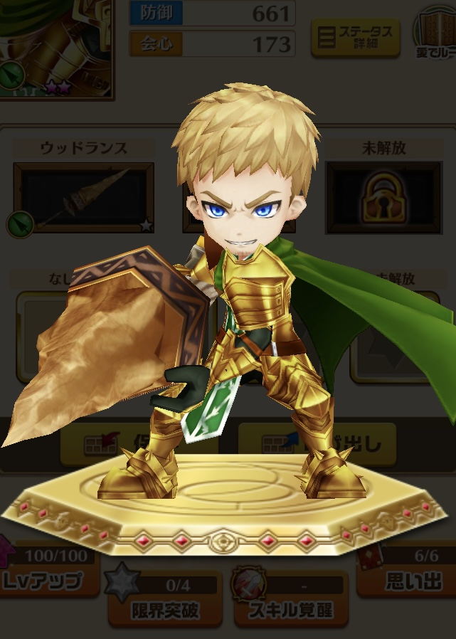
多様な職業
剣士、アーチャー、魔法使い、ランサーなど職業の数は全12種。これに火、水、雷などの計６属性が組み合わさる。
- 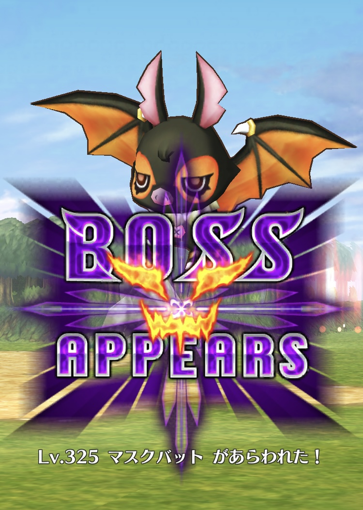
- 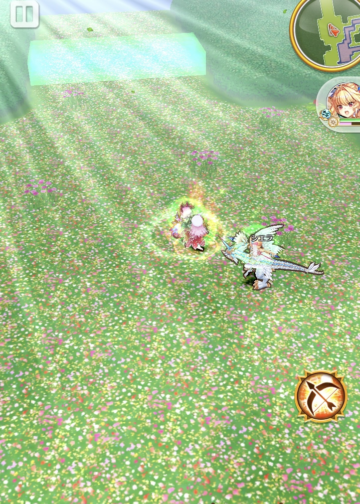
- 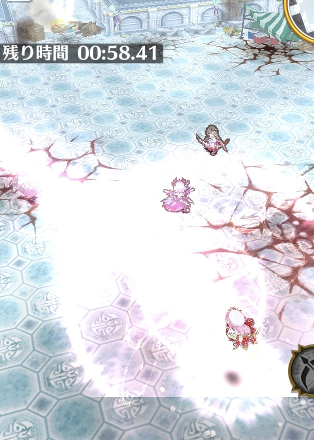
クエストタイプ
特定の敵グループの全滅、特定の位置へ到達、制限時間まで生き残るなどクエストクリア条件は様々。さらにクエスト内には3つのミッションが存在し、それらも全て達成することでクエストコンプリートとなる。
- 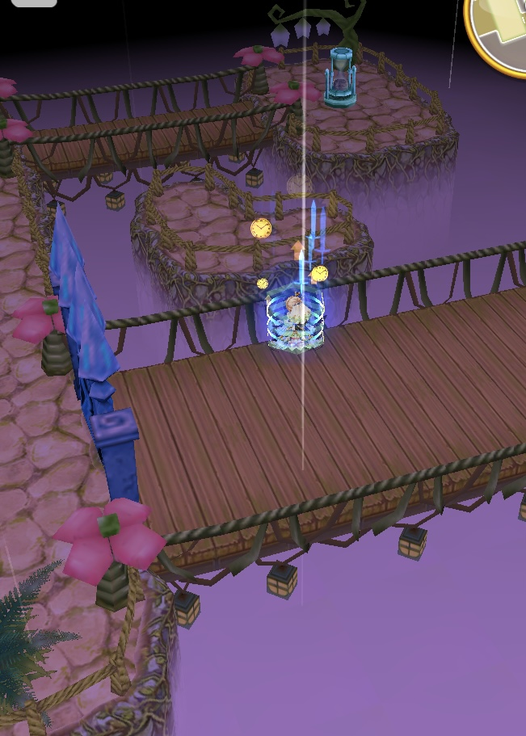
- 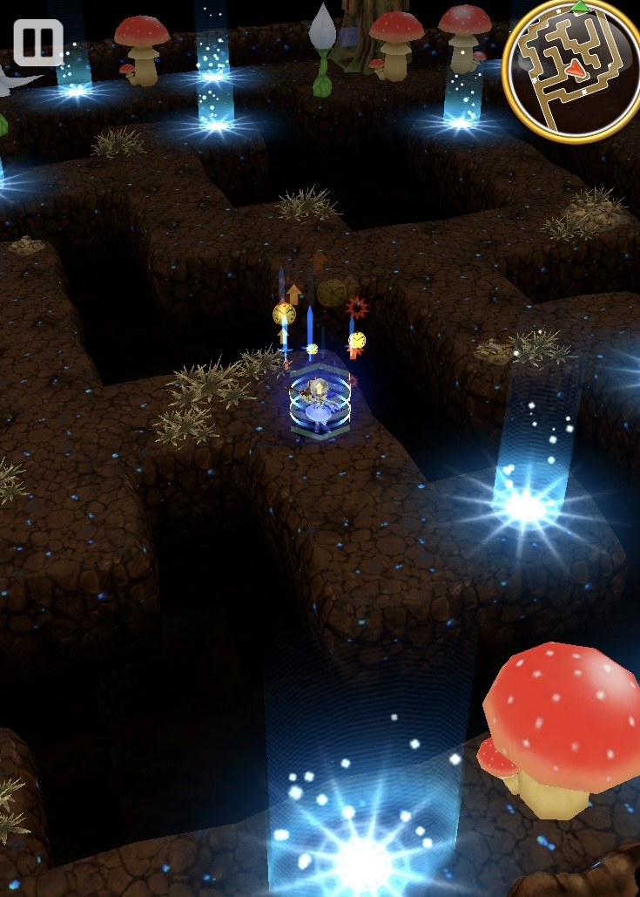
- 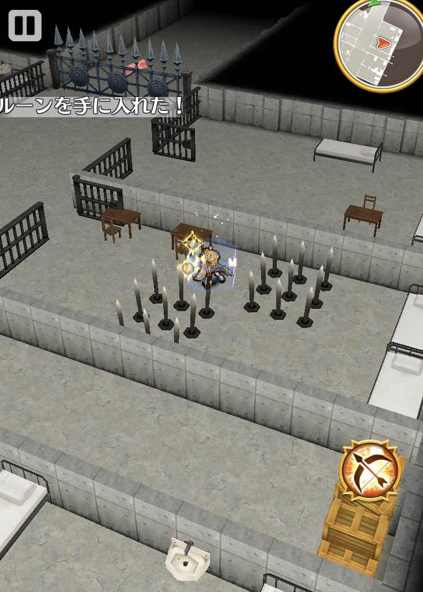
ギミック多数
開いている時間に制限のある扉、ワープゾーン、当たるとダメージを受けるトラップなどクエスト内には様々なギミックが存在する。中にはうまく活用するとクエストを有利に進められるものもある。
その5 やり込み要素多々
お楽しみ要素盛り沢山
タウン、モンスター、武器、アクセサリー、称号、キャラクター強化に親密度、更にはリアルイベントも。白猫はやり込み要素が盛り沢山。
タウン
主人公達が暮らす飛行島に様々な建物を建てられる。建築時間は実際の時間であるため、放置ゲームとしても楽しめる。建物はイベント毎に新しく手に入る。学園風のつくりにしたり、城下町のようなつくりにしたり、キャラクターの銅像を無造作に立てたりと、タウンのデコレーションは自由自在。

モンスター
白猫は敵キャラも魅力的。ボスはともかく通常の敵の一体一体に至るまでその敵特有の能力を持つため、バトルを飽きさせない。基本的にそのイベント以前に登場した敵はボスも含めてそれ以降のイベントで登場することとなる。敵の種類はフォルム違いや属性違いも含めると750以上。
その他
装備させる武器、アクセサリー、石板をカスタマイズしてキャラクターをより強くしたり、高難易度クエストに挑戦して手に入るプロフィールに設定できるレアな称号を入手したり、沢山ゲームをプレイしてポイントを稼いでランクを上げたり、特定のキャラクターを多く使用して親密度を高めたりと全てを極めようと思うとキリがない。
クエストをクリアして手に入れたり、ログインボーナスで受け取れたりする白猫をプレイする上では欠かせない各種アイテムについて理解しよう。
ジュエル
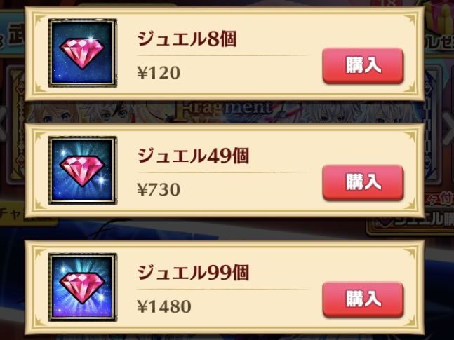キャラガチャや武器ガチャを引くのに必要。クエストクリアで入手できたり、実際のお金で購入することによって手に入る。
ルーン
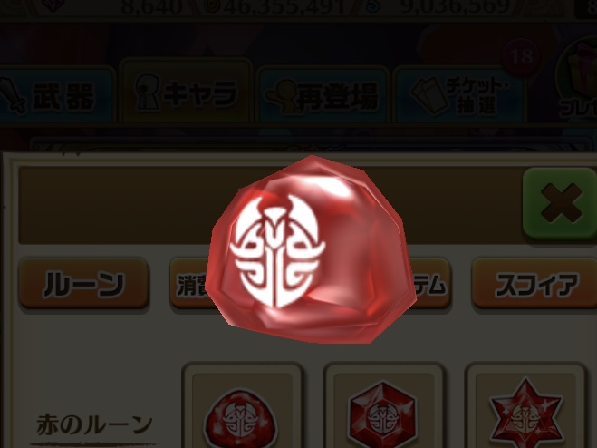キャラクターの強化やタウンの建物のレベルを上げるのに必要。クエストで手に入る。ルーンの形に応じてレア度が異なる。
虹のルーン
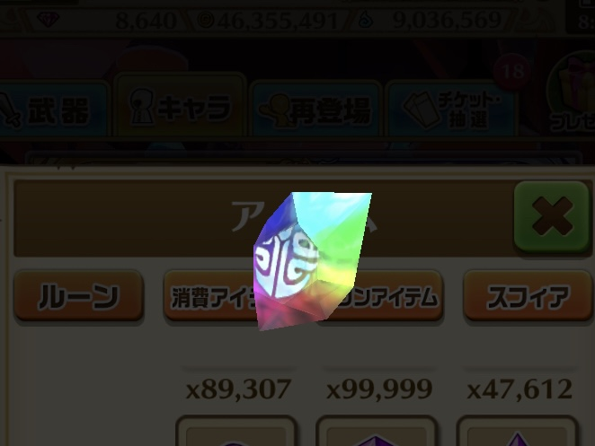武器の進化や一定レベル以上に達したキャラクターの強化に必要。常時開催されている特定のクエストにて手に入る。
スフィア
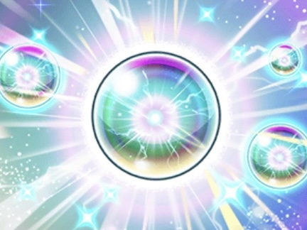キャラクターや必殺技であるスキルを覚醒して大幅強化させるのに必要。アイテム交換や毎週開催される限定クエストにて手に入る。
当サイトで掲載する画像や音楽などの著作権は全てその権利所有者様に帰属します。
【サイト内の引用作品】
株式会社コロプラ / 白猫プロジェクト